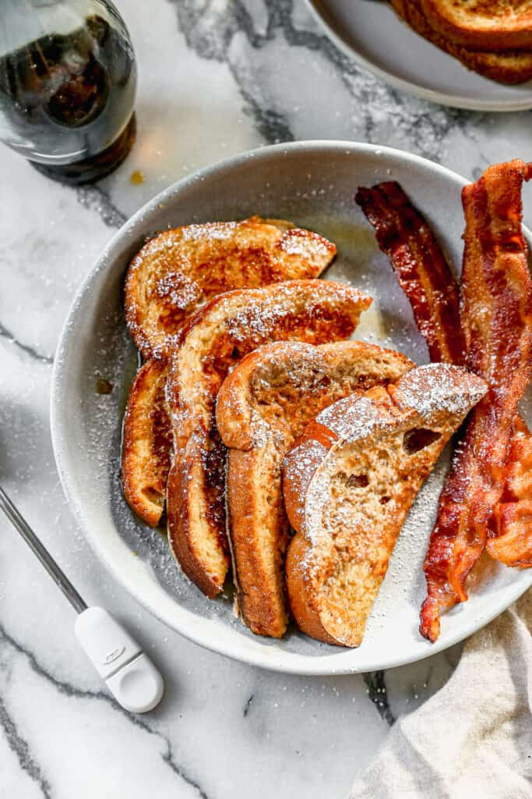

French Toast

Description
Egg-battered toast with cinnamon sugar flavours, a classic breakfast dish when you're feeling something Western in the morning. As listed from Tastes Better from Scratch
Ingredients
- 4 large eggs
- 2/3 cup milk
- 1/4 cup all-purpose flour
- 1/4 cup granulated sugar
- 1/4 teaspoon salt
- 1 teaspoon ground cinnamon
- 1 teaspoon vanilla extract
- 8 thick slices bread
Steps
- Preheat griddle to 350 degrees F or or heat a skillet over medium heat.
- Add all ingredients, except the bread, to a blender or to a shallow dish and whisk well to combine. If whisking by hand, mix flour and eggs together first, then add remaining ingredients.
- Dip bread slices into the batter, dredging them well on both sides, and place on hot, greased griddle or skillet.
- Cook for a few minutes, until the bottom of the breads starts to get golden brown. Flip and cook on the other side the same.
- Remove to a plate. Serve warm with syrup and a sprinkle of powdered sugar.